User's Manual
Software Version: 1.9.0b
Date: 2005/02/09 09:25:00

Center for Applied Scientific Computing
Lawrence Livermore National Laboratory
Copyright © 1998 The Regents of the University of California.
Permission is granted to make and distribute verbatim copies of this
manual provided the copyright notice and this permission notice are
preserved on all copies.
This work was produced at the University of California, Lawrence
Livermore National Laboratory (UC LLNL) under contract
no. W-7405-ENG-48 (Contract 48) between the U.S. Department of Energy
(DOE) and The Regents of the University of California (University) for
the operation of UC LLNL. The rights of the Federal Government are
reserved under Contract 48 subject to the restrictions agreed upon by
the DOE and University as allowed under DOE Acquisition Letter 97-1.
This work was prepared as an account of work sponsored by an agency of
the United States Government. Neither the United States Government nor
the University of California nor any of their employees, makes any
warranty, express or implied, or assumes any liability or
responsibility for the accuracy, completeness, or usefulness of any
information, apparatus, product, or process disclosed, or represents
that its use would not infringe privately-owned rights. Reference
herein to any specific commercial products, process, or service by
trade name, trademark, manufacturer or otherwise does not necessarily
constitute or imply its endorsement, recommendation, or favoring by
the United States Government or the University of California. The
views and opinions of authors expressed herein do not necessarily
state or reflect those of the United States Government or the
University of California, and shall not be used for advertising or
product endorsement purposes.
UCRL-MA-137155 DR
HYPRE is a software library for solving large, sparse linear systems of equations on massively parallel computers. The library was created with the primary goal of providing users with advanced parallel preconditioners. Issues of robustness, ease of use, flexibility, and interoperability also play an important role.
There are three HYPRE Mailing Lists that can be subscribed to through the HYPRE web page, which is located at http://www.llnl.gov/CASC/hypre.
Before writing any code:
The following code serves as a simple example of the usage of
HYPRE. In this example, the structured-grid interface
(discussed in Chapter 3) is used
to enter the problem into HYPRE, and the PFMG Multigrid
solver is used to solve the system. Since the structured-grid
interface currently only supports one underlying matrix class, there
are no choices to make here. If we were using the semi-structured
grid interface instead, then we would have to choose between the
SStruct and ParCSR matrix classes, depending on the
solver we want to use.
This example and all other examples in this manual are written in C, but HYPRE also supports Fortran. See Section 8.2 for details.
/*----------------------------------------------------------- * Set up the grid and stencil *-----------------------------------------------------------*/ HYPRE_StructGridCreate(MPI_COMM_WORLD, dim, &grid); HYPRE_StructGridSetExtents(grid, ilower, iupper); ... HYPRE_StructGridAssemble(grid); HYPRE_StructStencilCreate(dim, stencil_size, &stencil); HYPRE_StructStencilSetElement(stencil, 0, offset0); ... /*----------------------------------------------------------- * Set up the matrix, right-hand side, and initial guess *-----------------------------------------------------------*/ HYPRE_StructMatrixCreate(MPI_COMM_WORLD, grid, stencil, &A); HYPRE_StructMatrixInitialize(A); HYPRE_StructMatrixSetBoxValues(A, ilower, iupper, nelts, elts, Avalues); ... HYPRE_StructMatrixAssemble(A); HYPRE_StructVectorCreate(MPI_COMM_WORLD, grid, &b); HYPRE_StructVectorInitialize(b); HYPRE_StructVectorSetBoxValues(b, ilower, iupper, bvalues); ... HYPRE_StructVectorAssemble(b); HYPRE_StructVectorCreate(MPI_COMM_WORLD, grid, &x); HYPRE_StructVectorInitialize(x); HYPRE_StructVectorSetBoxValues(x, ilower, iupper, xvalues); ... HYPRE_StructVectorAssemble(x); /*----------------------------------------------------------- * Set up the solver *-----------------------------------------------------------*/ HYPRE_StructPFMGCreate(MPI_COMM_WORLD, &solver); HYPRE_StructPFMGSetMaxIter(solver, 50); /* optional */ HYPRE_StructPFMGSetTol(solver, 1.0e-06); /* optional */ HYPRE_StructPFMGSetup(solver, A, b, x); /*----------------------------------------------------------- * Solve the linear system *-----------------------------------------------------------*/ HYPRE_StructPFMGSolve(solver, A, b, x); /*----------------------------------------------------------- * Get solution info and free up memory *-----------------------------------------------------------*/ HYPRE_StructVectorGetBoxValues(x, ilower, iupper, xvalues); ... HYPRE_StructPFMGDestroy(solver); HYPRE_StructGridDestroy(grid); HYPRE_StructStencilDestroy(stencil); HYPRE_StructMatrixDestroy(A); HYPRE_StructVectorDestroy(b); HYPRE_StructVectorDestroy(x);
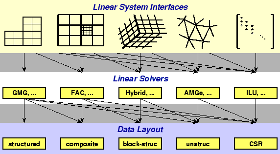
|
The top row of Figure 2.1 illustrates a number of conceptual interfaces. Generally, the conceptual interfaces are denoted by different types of computational grids, but other application features might also be used, such as geometrical information. These conceptual interfaces are intended to represent the way that applications developers naturally think of their linear problem, and provide natural interfaces for them to pass the data that defines their linear system into HYPRE. Essentially, these conceptual interfaces can be considered convenient utilities for helping a user build a matrix data structure for HYPRE solvers and preconditioners. For example, applications that use structured grids (such as in the left-most interface in the Figure 2.1) typically view their linear problems in terms of stencils and grids. On the other hand, applications that use unstructured grids and finite elements typically view their linear problems in terms of elements and element stiffness matrices. Finally, the right-most interface is the standard linear-algebraic (matrix rows/columns) way of viewing the linear problem.
The second row of Figure 2.1 is a set of linear solver algorithms. Each linear solver group requires different information from the user through the conceptual interfaces. So, the geometric multigrid algorithm (GMG) listed in the left-most box, for example, can only be used with the left-most conceptual interface. On the other hand, the ILU algorithm in the right-most box may be used with any conceptual interface.
The third row of Figure 2.1 is a list of data layouts or matrix/vector storage schemes. The relationship between linear solver and storage scheme is similar to that of interface and linear solver.
HYPRE currently supports four conceptual interfaces:
Struct): This interface
is appropriate for applications whose grids consist of unions of
logically rectangular grids with a fixed stencil pattern of nonzeros
at each grid point. This interface supports only a single unknown per
grid point.
See Chapter 3 for details.
SStruct): This
interface is appropriate for applications whose grids are mostly
structured, but with some unstructured features. Examples include
block-structured grids, composite grids in structured adaptive mesh
refinement (AMR) applications, and overset grids. This interface
supports multiple unknowns per cell.
See Chapter 4 for details.
FEI): This is appropriate for
users who form their linear systems from a finite element
discretization. The interface mirrors typical finite element data
structures, including element stiffness matrices. Though this
interface is provided in HYPRE, its definition was determined
elsewhere (www.z.ca.sandia.gov/fei).
See Chapter 5 for details.
IJ): This is the
traditional linear-algebraic interface. It can be used as a last
resort by users for whom the other grid-based interfaces are not
appropriate. It requires more work on the user's part, though still
less than building parallel sparse data structures. General solvers
and preconditioners are available through this interface, but not
specialized solvers which need more information. Our experience is
that users with legacy codes, in which they already have code for
building matrices in particular formats, find the IJ interface
relatively easy to use.
See Chapter 6 for details.
Generally, a user should choose the most specific interface that matches their application, because this will allow them to use specialized and more efficient solvers and preconditioners without losing access to more general solvers.
In order to get access to the most efficient and scalable solvers for
scalar structured-grid applications, users should use the
Struct interface described in this chapter. This interface
will also provide access (this is not yet supported) to solvers in
HYPRE that were designed for unstructured-grid applications and
sparse linear systems in general. These additional solvers are
usually provided via the unstructured-grid interface (FEI) or
the linear-algebraic interface (IJ) described in Chapters
5 and 6.
Figure 3.1 gives an example of the type of grid
currently supported by the Struct interface. The interface
uses a finite-difference or finite-volume style, and currently
supports only scalar PDEs (i.e., one unknown per gridpoint).
The grid is described via a global index space, i.e., via integer tuples (triples in 3D). The integers may have any value, negative or positive. The global indexes allow HYPRE to discern how data is related spatially, and how it is distributed across the parallel machine. Each process describes that portion of the grid that it ``owns'', one box at a time. For example, in the figure, the global grid can be described in terms of three boxes, two owned by process 0, and one owned by process 1. A box is described in terms of a lower and upper index.
On process 0, the following code will set up the grid shown in the figure (the code for process 1 is similar).
HYPRE_StructGrid grid;
int ilower[2][2] = {{-3, 1}, {0, 1}};
int iupper[2][2] = {{-1, 2}, {2, 4}};
HYPRE_StructGridCreate(MPI_COMM_WORLD, 2, &grid);
HYPRE_StructGridSetExtents(grid, ilower[0], iupper[0]);
HYPRE_StructGridSetExtents(grid, ilower[1], iupper[1]);
HYPRE_StructGridAssemble(grid);
The Create() routine creates an empty 2D grid object that lives
on the MPI_COMM_WORLD communicator. The SetExtents()
routine adds a new box to the grid. The Assemble() routine is
a collective call (i.e., must be called on all processes from a common
synchronization point), and finalizes the grid assembly, making the
grid ``ready to use''.
The geometry of the discretization stencil is described by an array of
integer tuples in 2D (triples in 3D), each representing a relative
offset (in index space) from some gridpoint on the grid. For example,
the geometry of the 5-pt stencil for the example problem being
considered can be represented in the following way:
On process 0 or 1, the following code will set up the stencil in (3.2). The stencil must be the same on all processes.
HYPRE_StructStencil stencil;
int offsets[5][2] = {{0,0}, {-1,0}, {1,0}, {0,-1}, {0,1}};
int s;
HYPRE_StructStencilCreate(2, 5, &stencil);
for (s = 0; s < 5; s++)
{
HYPRE_StructStencilSetElement(stencil, s, offsets[s]);
}
The Create() routine creates an empty 2D, 5-pt stencil object.
The SetElement() routine defines the geometry of the stencil
and assigns the array numbers for each of the stencil entries. None
of the calls are collective calls.
The matrix is set up in terms of the grid and stencil objects
described in Sections
3.1 and 3.2.
The coefficients associated with each stencil entry will typically
vary from gridpoint to gridpoint, but in the example problem being
considered, they are as follows over the entire grid (except at
boundaries; see below):
On process 0, the following code will set up matrix values associated with the center () and south () stencil entries in (3.2) / (3.3) (boundaries are ignored here temporarily).
HYPRE_StructMatrix A;
double values[36];
int stencil_indices[2] = {0,3};
int i;
HYPRE_StructMatrixCreate(MPI_COMM_WORLD, grid, stencil, &A);
HYPRE_StructMatrixInitialize(A);
for (i = 0; i < 36; i += 2)
{
values[i] = 4.0;
values[i+1] = -1.0;
}
HYPRE_StructMatrixSetBoxValues(A, ilower[0], iupper[0], 2,
stencil_indices, values);
HYPRE_StructMatrixSetBoxValues(A, ilower[1], iupper[1], 2,
stencil_indices, values);
/* set boundary conditions */
...
HYPRE_StructMatrixAssemble(A);
The Create() routine creates an empty matrix object. The
Initialize() routine indicates that the matrix coefficients
(or values) are ready to be set. This routine may or may not involve
the allocation of memory for the coefficient data, depending on the
implementation. The optional Set routines mentioned later in
this chapter and in the Reference Manual, should be called before this
step. The SetBoxValues() routine sets the matrix coefficients
for some set of stencil entries over the gridpoints in some box. Note
that the box need not correspond to any of the boxes used to create
the grid, but values should be set for all gridpoints that this
process ``owns''. The Assemble() routine is a collective call,
and finalizes the matrix assembly, making the matrix ``ready to use''.
Matrix coefficients that reach outside of the boundary should be set to zero. For efficiency reasons, HYPRE does not do this automatically. The most natural time to insure this is when the boundary conditions are being set, and this is most naturally done after the coefficients on the grid's interior have been set. For example, during the implementation of the Dirichlet boundary condition on the lower boundary of the grid in Figure 3.1, the ``south'' coefficient must be set to zero. To do this on process 0, the following code could be used:
int ilower[2] = {-3, 1};
int iupper[2] = { 2, 1};
/* create matrix and set interior coefficients */
...
/* implement boundary conditions */
...
for (i = 0; i < 12; i++)
{
values[i] = 0.0;
}
i = 3;
HYPRE_StructMatrixSetBoxValues(A, ilower, iupper, 1, &i, values);
/* complete implementation of boundary conditions */
...
The right-hand-side vector is set up similarly to the matrix set up described in Section 3.3 above. The main difference is that there is no stencil (note that a stencil currently does appear in the interface, but this will eventually be removed).
On process 0, the following code will set up the right-hand-side vector values.
HYPRE_StructVector b;
double values[18];
int i;
HYPRE_StructVectorCreate(MPI_COMM_WORLD, grid, &b);
HYPRE_StructVectorInitialize(b);
for (i = 0; i < 18; i++)
{
values[i] = 0.0;
}
HYPRE_StructVectorSetBoxValues(b, ilower[0], iupper[0], values);
HYPRE_StructVectorSetBoxValues(b, ilower[1], iupper[1], values);
HYPRE_StructVectorAssemble(b);
The Create() routine creates an empty vector object. The
Initialize() routine indicates that the vector coefficients
(or values) are ready to be set. This routine follows the same rules
as its corresponding Matrix routine. The SetBoxValues()
routine sets the vector coefficients over the gridpoints in some box,
and again, follows the same rules as its corresponding Matrix
routine. The Assemble() routine is a collective call, and
finalizes the vector assembly, making the vector ``ready to use''.
Some solvers and matrix storage schemes provide capabilities for
significantly reducing memory usage when the coefficient matrix is
symmetric. In this situation, each off-diagonal coefficient appears
twice in the matrix, but only one copy needs to be stored. The
Struct interface provides support for matrix and solver
implementations that use symmetric storage via the
SetSymmetric() routine.
To describe this in more detail, consider again the 5-pt finite-volume
discretization of (3.1) on the grid pictured in Figure
3.1. Because the discretization is symmetric, only half
of the off-diagonal coefficients need to be stored. To turn symmetric
storage on, the following line of code needs to be inserted somewhere
between the Create() and Initialize() calls.
Note that symmetric storage may or may not actually be used, depending on the underlying storage scheme. Currently in HYPRE, symmetric storage is always used when indicated.HYPRE_StructMatrixSetSymmetric(A, 1);
To most efficiently utilize the Struct interface for symmetric
matrices, notice that only half of the off-diagonal coefficients need
to be set. To do this for the example being considered, we simply
need to redefine the 5-pt stencil of Section
3.2 to an ``appropriate'' 3-pt stencil, then
set matrix coefficients (as in Section 3.3)
for these three stencil elements only. For example, we could
use the following stencil
In order to get access to the most efficient and scalable solvers for
semi-structured-grid applications (applications with grids that are
mostly structured, but with some unstructured features), users should
use the SStruct interface described in this chapter. This
interface also provides access to solvers in HYPRE that were
designed for unstructured-grid applications and sparse linear systems
in general. These additional solvers are usually provided via the
unstructured-grid interface (FEI) or the linear-algebraic
interface (IJ) described in Chapters
5 and 6.
Figure 4.1 gives an example of the type of
grid currently supported by the SStruct interface. The grid is
composed of three ``parts''. There is a single cell-centered variable
across the entire grid, except at the grid cell marked with a square,
which has one additional cell-centered variable.
On process 0, the following code will set up the grid shown in the figure (the code for processes 1 and 2 is similar).
HYPRE_SStructGrid grid;
int ilower[2][2] = {{-1, 0}, {1, 0}};
int iupper[2][2] = {{ 0, 3}, {2, 3}};
HYPRE_SStructVariable vars[1] = {HYPRE_SSTRUCT_VARIABLE_CELL};
int addindex[2] = {1,2};
HYPRE_SStructVariable addvars[1] = {HYPRE_SSTRUCT_VARIABLE_CELL};
HYPRE_SStructGridCreate(MPI_COMM_WORLD, 2, 3, &grid);
HYPRE_SStructGridSetExtents(grid, 0, ilower[0], iupper[0]);
HYPRE_SStructGridSetExtents(grid, 0, ilower[1], iupper[1]);
HYPRE_SStructGridSetVariables(grid, 0, 1, vars);
HYPRE_SStructGridAddVariables(grid, 0, addindex, 1, addvars);
HYPRE_SStructGridAssemble(grid);
The Create() routine creates an empty 2D grid object that lives
on the MPI_COMM_WORLD communicator. The SetExtents()
routine adds a new box to the grid. The SetVariables() routine
sets the variables on a grid part, and the AddVariables()
routine adds variables to a grid part index (in the above example,
there are two cell-centered variables at index (1,2)). The
Assemble() routine is a collective call (i.e., must be called
on all processes from a common synchronization point), and finalizes
the grid assembly, making the grid ``ready to use''.
The geometry of the discretization stencil is described by an array of
integer tuples in 2D (triples in 3D), each representing a relative
offset (in index space) from some gridpoint on the grid. For example,
the geometry of the 9-pt stencil for the example problem being
considered can be represented in the following way:
On process 0, 1, or 2, the following code will set up the stencil in (3.2).
HYPRE_SStructStencil stencil;
int s;
int offsets[9][2] = {{0,0},
{-1, 0}, { 1, 0}, { 0,-1}, { 0, 1}};
{-1,-1}, { 1,-1}, {-1, 1}, { 1, 1}};
HYPRE_SStructStencilCreate(2, 9, &stencil);
for (s = 0; s < 9; s++)
HYPRE_SStructStencilSetEntry(stencil, s, offsets[s], 0);
The Create() routine creates an empty 2D, 9-pt stencil object.
The SetEntry() routine defines the geometry of the stencil, and
assigns the array numbers for each of the stencil entries. None of
the calls are collective calls.
The graph will represent the nonzero structure of the matrix in Section 4.4 below. It is defined in terms of the grid and stencil objects described in Sections 4.1 and 4.2 above.
On process 0, the following code will set up the graph for the example problem.
HYPRE_SStructGraph graph;
int addindex[9][2] = {{ 2,0},{2,1},{2,2},{2,3},
{-1,3},{0,3},{1,3},{2,3},
{ 1,2}};
int addentries[9][2] = {{-1,0},{-1,1},{-1,2},{-1,3},
{ 9,9},{10,9},{11,9},{12,9},
{ 1,2}};
HYPRE_SStructGraphCreate(MPI_COMM_WORLD, grid, &graph);
HYPRE_SStructGraphSetStencil(graph, 0, 0, stencil);
/* Add graph edge entries at grid part boundaries */
HYPRE_SStructGraphAddEntries(graph, 0, addindex[0], 0, 2, addentries[0], 0);
HYPRE_SStructGraphAddEntries(graph, 0, addindex[0], 0, 2, addentries[1], 0);
HYPRE_SStructGraphAddEntries(graph, 0, addindex[1], 0, 2, addentries[0], 0);
...
/* Add graph edge entries at index (1,2) */
HYPRE_SStructGraphAddEntries(graph, 0, addindex[8], 0, 0, addentries[8], 1);
HYPRE_SStructGraphAddEntries(graph, 0, addindex[8], 1, 0, addentries[8], 0);
The matrix is set up in terms of the graph object described in Section
4.3 above. The coefficients associated
with each graph entry will typically vary from gridpoint to gridpoint,
but in the example problem being considered, they are as follows over
the entire grid (except at boundaries; see below):
On process 0, the following code will set up matrix values associated with the center () and south () stencil entries in (3.2) / (3.3). Matrix values associated with the non-stencil graph entries are also set up.
HYPRE_SStructMatrix A;
double values[32];
int sindices[2] = {0,3};
int gindices[4] = {9,10,11,0};
int i;
HYPRE_SStructMatrixCreate(MPI_COMM_WORLD, graph, &A);
HYPRE_SStructMatrixInitialize(A);
for (i = 0; i < 32; i += 2)
{
values[i] = 8.0;
values[i+1] = -1.0;
}
HYPRE_SStructMatrixSetBoxValues(A, 0, ilower[0], iupper[0], 0,
2, sindices, values);
/* set values at non-stencil graph entries */
for (i = 0; i < 3; i++)
{
values[i] = -1.0;
}
HYPRE_SStructMatrixSetValues(A, 0, addindex[0], 0, 2, gindices, values);
HYPRE_SStructMatrixSetValues(A, 0, addindex[1], 0, 3, gindices, values);
HYPRE_SStructMatrixSetValues(A, 0, addindex[2], 0, 3, gindices, values);
...
HYPRE_SStructMatrixSetValues(A, 0, addindex[7], 0, 1, gindices, values);
HYPRE_SStructMatrixSetValues(A, 0, addindex[7], 1, 1, &gindices[3], values);
/* zero out coefficients that reach outside of the domain or grid part */
...
/* set boundary conditions at domain boundaries, */
...
HYPRE_SStructMatrixAssemble(A);
The right-hand-side vector is set up similarly to the matrix set up described in Section 4.4 above. The main difference is that there is no graph.
The finite element interface (FEI) defines a linear solver interface for finite element applications. For information on how to use this interface, see [4]. This chapter describes the iterative methods and preconditioners in the HYPRE implementation of this interface.
Solving a linear system from a finite element problem consists of four steps in the FEI:
Parameters to the HYPRE solvers are specified by calling
where sysHandle is an identifier for the linear system being solved, numParams is the number of parameter strings, and paramStrings is an array of null-terminated strings with the format: ``parameter_name value''. For example, setting the preconditioner can be accomplished by:void FEI_parameters(int sysHandle, int numParams, char **paramStrings);
All possible parameters are listed in Table 5.1.char **paramStrings[1]; paramStrings[0] = (char *) malloc(64*sizeof(char)); strcpy(paramStrings[0], "preconditioner parasails"); FEI_parameters(sysHandle, 1, paramStrings);
A linear system is then solved by calling
void FEI_iterateToSolve(int sysHandle);
The IJ interface described in this chapter is the lowest common
denominator for specifying linear systems in HYPRE. This interface
provides access to general sparse-matrix solvers in HYPRE, not
to the specialized solvers that require more problem information.
As with the other interfaces in HYPRE, the IJ interface
expects to get data in distributed form because this is the only
scalable approach for assembling matrices on thousands of processes.
Matrices are assumed to be distributed by blocks of rows as follows:
| 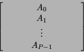 | (6.1) |
ilower and iupper in the
Create() call below.
The following example code illustrates the basic usage of the
IJ interface for building matrices:
TheMPI_Comm comm; HYPRE_IJMatrix ij_matrix; HYPRE_ParCSRMatrix parcsr_matrix; int ilower, iupper; int jlower, jupper; int nrows; int *ncols; int *rows; int *cols; double *values; HYPRE_IJMatrixCreate(comm, ilower, iupper, jlower, jupper, &ij_matrix); HYPRE_IJMatrixSetObjectType(ij_matrix, HYPRE_PARCSR); HYPRE_IJMatrixInitialize(ij_matrix); /* set matrix coefficients */ HYPRE_IJMatrixSetValues(ij_matrix, nrows, ncols, rows, cols, values); ... /* add-to matrix cofficients, if desired */ HYPRE_IJMatrixAddToValues(ij_matrix, nrows, ncols, rows, cols, values); ... HYPRE_IJMatrixAssemble(ij_matrix); HYPRE_IJMatrixGetObject(ij_matrix, (void **) &parcsr_matrix);
Create() routine creates an empty matrix object that lives
on the comm communicator. This is a collective call (i.e.,
must be called on all processes from a common synchronization point),
with each process passing its own row extents, ilower and
iupper. The row partitioning must be contiguous, i.e.,
iupper for process i must equal ilower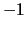 for
process i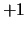. Note that this allows matrices to have 0- or
1-based indexing. The parameters jlower and jupper
define a column partitioning, and should match ilower and
iupper when solving square linear systems. See the Reference
Manual for more information.
The SetObjectType() routine sets the underlying matrix object
type to HYPRE_PARCSR (this is the only object type currently
supported). The Initialize() routine indicates that the matrix
coefficients (or values) are ready to be set. This routine may or may
not involve the allocation of memory for the coefficient data,
depending on the implementation. The optional SetRowSizes()
and SetDiagOffdSizes() routines
mentioned later in this chapter and in the Reference Manual, should be
called before this step.
The SetValues() routine sets matrix values for some number of
rows (nrows) and some number of columns in each row
(ncols). The actual row and column numbers of the matrix
values to be set are given by rows and cols.
After the coefficients are set, they can be added to with an
AddTo() routine. Each process should set only those matrix
values that it ``owns'' in the data distribution.
The Assemble() routine is a collective call, and finalizes the
matrix assembly, making the matrix ``ready to use''. The
GetObject() routine retrieves the built matrix object so that
it can be passed on to HYPRE solvers that use the ParCSR
internal storage format. Note that this is not an expensive routine;
the matrix already exists in ParCSR storage format, and the
routine simply returns a ``handle'' or pointer to it. Although we
currently only support one underlying data storage format, in the
future several different formats may be supported.
One can preset the row sizes of the matrix in order to reduce the
execution time for the matrix specification. One can specify the
total number of coefficients for each row, the number of coefficients
in the row that couple the diagonal unknown to (Diag) unknowns
in the same processor domain, and the number of coefficients in the
row that couple the diagonal unknown to (Offd) unknowns in
other processor domains:
HYPRE_IJMatrixSetRowSizes(ij_matrix, sizes); HYPRE_IJMatrixSetDiagOffdSizes(matrix, diag_sizes, offdiag_sizes);
Once the matrix has been assembled, the sparsity pattern cannot be
altered without completely destroying the matrix object and starting
from scratch. However, one can modify the matrix values of an already
assembled matrix. To do this, first call the Initialize()
routine to re-initialize the matrix, then set or add-to values as
before, and call the Assemble() routine to re-assemble before
using the matrix. Re-initialization and re-assembly are very cheap,
essentially a no-op in the current implementation of the code.
The following example code illustrates the basic usage of the
IJ interface for building vectors:
TheMPI_Comm comm; HYPRE_IJVector ij_vector; HYPRE_ParVector par_vector; int jlower, jupper; int nvalues; int *indices; double *values; HYPRE_IJVectorCreate(comm, jlower, jupper, &ij_vector); HYPRE_IJVectorSetObjectType(ij_vector, HYPRE_PARCSR); HYPRE_IJVectorInitialize(ij_vector); /* set vector values */ HYPRE_IJVectorSetValues(ij_vector, nvalues, indices, values); ... HYPRE_IJVectorAssemble(ij_vector); HYPRE_IJVectorGetObject(ij_vector, (void **) &par_vector);
Create() routine creates an empty vector object that lives
on the comm communicator. This is a collective call, with each
process passing its own index extents, jlower and
jupper. The names of these extent parameters begin with a
j because we typically think of matrix-vector multiplies as
the fundamental operation involving both matrices and vectors. For
matrix-vector multiplies, the vector partitioning should match the
column partitioning of the matrix (which also uses the j
notation). For linear system solves, these extents will typically
match the row partitioning of the matrix as well.
The SetObjectType() routine sets the underlying vector storage
type to HYPRE_PARCSR (this is the only storage type currently
supported). The Initialize() routine indicates that the vector
coefficients (or values) are ready to be set. This routine may or may
not involve the allocation of memory for the coefficient data,
depending on the implementation.
The SetValues() routine sets the vector values for some
number (nvalues) of indices. Each process should set
only those vector values that it ``owns'' in the data distribution.
The Assemble() routine is a trivial collective call, and
finalizes the vector assembly, making the vector ``ready to use''.
The GetObject() routine retrieves the built vector object so
that it can be passed on to HYPRE solvers that use the
ParVector internal storage format.
Vector values can be modified in much the same way as with matrices by
first re-initializing the vector with the Initialize() routine.
There are several solvers available in HYPRE via different conceptual interfaces (see Table 7.1). The procedure for setup and use of solvers and preconditioners is largely the same. We will refer to them both as solvers in the sequel except when noted. In normal usage, the preconditioner is chosen and constructed before the solver, and then handed to the solver as part of the solver's setup. In the following, we assume the most common usage pattern in which a single linear system is set up and then solved with a single righthand side. We comment later on considerations for other usage patterns.
| |||||||||||||||||||||||||||||||||||||||||||||||||||||||
Set() calls provided by the
solver. As is true throughout HYPRE, all parameters have
reasonable defaults if not chosen. Note that in HYPRE, convergence
criteria can be chosen after the preconditioner/solver has been setup.
SetPreconditioner() call.
Setup() routine.
At this point, the solver/preconditioner is fully constructed and ready for use.
Solve() routine.
SMG is a parallel semicoarsening multigrid solver for the linear
systems arising from finite difference, finite volume, or finite
element discretizations of the diffusion equation,
| 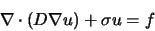 | (7.1) |
SMG is a particularly robust method. The algorithm semicoarsens in the z-direction and uses plane smoothing. The xy plane-solves are effected by one V-cycle of the 2D SMG algorithm, which semicoarsens in the y-direction and uses line smoothing.
PFMG is a parallel semicoarsening multigrid solver similar to SMG. See [1,5] for details on the algorithm and its parallel implementation/performance.
The main difference between the two methods is in the smoother: PFMG uses simple pointwise smoothing. As a result, PFMG is not as robust as SMG, but is much more efficient per V-cycle.
BoomerAMG is a parallel implementation of algebraic multigrid. It can be used both as a solver or as a preconditioner. The user can choose between various different parallel coarsening techniques and relaxation schemes. See [6] for a detailed description of the coarsening algorithms, the interpolation and nueemerical results. The following coarsening techniques are available:
The solver is set up and run using the following routines, where A is the matrix, b the right hand side and x the solution vector of the linear system to be solved:
#include "HYPRE_parcsr_ls.h" int HYPRE_BoomerAMGCreate(HYPRE_Solver *solver); <set certain parameters if desired > int HYPRE_BoomerAMGSetup(HYPRE_Solver solver, HYPRE_ParCSRMatrix A, HYPRE_ParVector b, HYPRE_ParVector x); int HYPRE_BoomerAMGSolve(HYPRE_Solver solver, HYPRE_ParCSRMatrix A, HYPRE_ParVector b, HYPRE_ParVector x); int HYPRE_BoomerAMGDestroy(HYPRE_Solver solver);
Parameters for setting up the code are specified using the following routines:
max_levels defines the maximal number of multigrid levels allowed. The default is 25.int HYPRE_BoomerAMGSetMaxLevels( HYPRE_Solver solver, int max_levels);
max_iter defines the maximal number of iterations allowed. The default is 20.int HYPRE_BoomerAMGSetMaxIter( HYPRE_Solver solver, int max_iter);
tol defines the tolerance needed for the stopping criterion 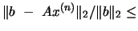 tol. The default for tol is 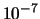.int HYPRE_BoomerAMGSetTol( HYPRE_Solver solver, double tol);
A point 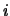 is strongly connected to , if 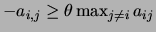, where the strong threshold 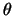 is a value between 0 and 1. Weak connections are usually ignored when determining the next lower level. Consequently, choosing a larger strong threshold leads in general to smaller coarse grids, but worse convergence rates. The default value for is 0.25, which appears to be a good choice for 2-dimensional problems. A better choice for 3-dimensional problems appears to be 0.5. However, the choice of the strength threshold is problem dependent and therefore there could be better choices than the two suggested ones.int HYPRE_BoomerAMGSetStrongThreshold( HYPRE_Solver solver, double strong_threshold);
This feature leads to a more efficient treatment of very diagonally dominant portions of the matrix. If the absolute row sum of row i weighted by the diagonal is greater than max_row_sum all dependencies of variable i are set to be weak. This feature can be switched off by setting max_row_sum to 1.0. The default is 0.9.int HYPRE_BoomerAMGSetMaxRowSum( HYPRE_Solver solver, double max_row_sum);
coarsen_type defines the coarsening used. The following options are possible:int HYPRE_BoomerAMGSetCoarsenType( HYPRE_Solver solver, int coarsen_type );
| 0 | CLJP-coarsening |
| 1 | Ruge-Stueben coarsening without boundary treatment |
| 3 | Ruge-Stueben coarsening with a 3rd 'second' pass on the boundaries |
| 6 | Falgout coarsening (default) |
measure_type defines whether local (measure_type = 0, default) or global measures (measure_type = 1) are used within the coarsening algorithm. This feature is ignored for the CLJP and the Falgout coarsening.int HYPRE_BoomerAMGSetMeasureType( HYPRE_Solver solver, int measure_type );
num_grid_sweeps[k] defines the number of sweeps over the grid on the fine grid (k=0), the down cycle (k=1), the up cycle (k=2) and the coarse grid (k=3).int HYPRE_BoomerAMGSetNumGridSweeps( HYPRE_Solver solver, int* num_grid_sweeps );
grid_relax_type[k] defines the relaxation used on the fine grid (k=0), the down cycle (k=1), the up cycle (k=2) and the coarse grid (k=3). The following options are possible for grid_relax_type[k]:int HYPRE_BoomerAMGSetGridRelaxType( HYPRE_Solver solver, int* grid_relax_type );
| 0 | weighted Jacobi |
| 1 | sequential Gauss-Seidel (very slow!) |
| 3 | Gauss-Seidel / Jacobi hybrid method (default) |
| 6 | symmetric Gauss-Seidel / Jacobi hybrid method |
| 9 | Gaussian elimination (only for the coarsest level (k=3), not recommended |
| if the system on the coarsest level is large) |
grid_relax_points[i][j] defines which points are to be relaxed during the (j+1)-th sweep on the fine grid (i=0), the down cycle (i=1), the up cycle (i=2) and the coarse grid (i=3), e.g. if grid_relax_points[1][0] is -1, all points marked -1 (which are in general fine points) are relaxed on the first sweep of the down cycle. Note: grid_relax_points[3][j] needs to be 0 always, since the concept of coarse and fine points does not exist on the coarsest grid. If the user sets it to another value, it will be automatically set to 0 and a warning printed, unless the direct solver is used.int HYPRE_BoomerAMGSetGridRelaxPoints( HYPRE_Solver solver, int** grid_relax_points);
defines the relaxation weights used on each level, if weighted Jacobi is used as relaxation method. The default relaxation weight is 1.0 on each level.int HYPRE_BoomerAMGSetRelaxWeight( HYPRE_Solver solver, double* relax_weight);
where ioutdat determines whether statistics information is generated and printed. The information is printed to standard output. The following options are possible:int HYPRE_BoomerAMGSetPrintLevel( HYPRE_Solver solver, int print_level);
| 0 | no output (default) |
| 1 | matrix statistics (includes information on interpolation operators and |
| matrices generated on each level) | |
| 2 | cycle statistics (includes residuals generated during solve phase) |
| 3 | matrix and cycle statistics |
ParaSails is a parallel implementation of a sparse approximate inverse preconditioner, using a priori sparsity patterns and least-squares (Frobenius norm) minimization. Symmetric positive definite (SPD) problems are handled using a factored SPD sparse approximate inverse. General (nonsymmetric and/or indefinite) problems are handled with an unfactored sparse approximate inverse. It is also possible to precondition nonsymmetric but definite matrices with a factored, SPD preconditioner.
ParaSails uses a priori sparsity patterns that are patterns of powers of sparsified matrices. ParaSails also uses a post-filtering technique to reduce the cost of applying the preconditioner. In advanced usage not described here, the pattern of the preconditioner can also be reused to generate preconditioners for different matrices in a sequence of linear solves.
For more details about the ParaSails algorithm, see [3].
#include "HYPRE_parcsr_ls.h" int HYPRE_ParaSailsCreate(MPI_Comm comm, HYPRE_Solver *solver, int symmetry); int HYPRE_ParaSailsSetParams(HYPRE_Solver solver, double thresh, int nlevel, double filter); int HYPRE_ParaSailsSetup(HYPRE_Solver solver, HYPRE_ParCSRMatrix A, HYPRE_ParVector b, HYPRE_ParVector x); int HYPRE_ParaSailsSolve(HYPRE_Solver solver, HYPRE_ParCSRMatrix A, HYPRE_ParVector b, HYPRE_ParVector x); int HYPRE_ParaSailsStats(HYPRE_Solver solver); int HYPRE_ParaSailsDestroy(HYPRE_Solver solver);
The accuracy and cost of ParaSails are parameterized by the real thresh and integer nlevels parameters, 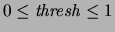, 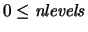. Lower values of thresh and higher values of nlevels lead to more accurate, but more expensive preconditioners. More accurate preconditioners are also more expensive per iteration. The default values are 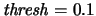 and 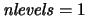. The parameters are set using HYPRE_ParaSailsSetParams.
Mathematically, given a symmetric matrix 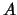, the pattern of the approximate inverse is the pattern of 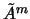 where 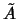 is a matrix that has been sparsified from . The sparsification is performed by dropping all entries in a symmetrically diagonally scaled whose values are less than thresh in magnitude. The parameter nlevel is equivalent to 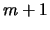. Filtering is a post-thresholding procedure. For more details about the algorithm, see [3].
The storage required for the ParaSails preconditioner depends on the parameters thresh and nlevels. The default parameters often produce a preconditioner that can be stored in less than the space required to store the original matrix. ParaSails does not need a large amount of intermediate storage in order to construct the preconditioner.
A ParaSails solver solver is returned with
where comm is the MPI communicator.int HYPRE_ParaSailsCreate(MPI_Comm comm, HYPRE_Solver *solver, int symmetry);
The value of symmetry has the following meanings, to indicate the symmetry and definiteness of the problem, and to specify the type of preconditioner to construct:
| value | meaning |
| 0 | nonsymmetric and/or indefinite problem, and nonsymmetric preconditioner |
| 1 | SPD problem, and SPD (factored) preconditioner |
| 2 | nonsymmetric, definite problem, and SPD (factored) preconditioner |
Parameters for setting up the preconditioner are specified using
int HYPRE_ParaSailsSetParams(HYPRE_Solver solver, double thresh, int nlevel, double filter);
The parameters are used to specify the sparsity pattern and filtering value (see above), and are described with suggested values as follows:
| parameter | type | range | sug. values | default | meaning |
| nlevel | integer | 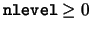 | 0, 1, 2 | 1 | 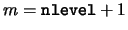 |
| thresh | real | 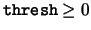 | 0, 0.1, 0.01 | 0.1 | thresh thresh |
| 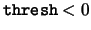 | -0.75, -0.90 | thresh selected automatically | |||
| filter | real | 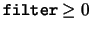 | 0, 0.05, 0.001 | 0.05 | filter value filter |
| 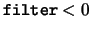 | -0.90 | filter value selected automatically |
When , then a threshold is selected such that 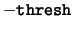 represents the fraction of the nonzero elements that are dropped. For example, if 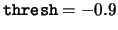 then will contain approximately ten percent of the nonzeros in .
When , then a filter value is selected such that 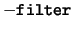 represents the fraction of the nonzero elements that are dropped. For example, if 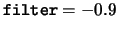 then approximately 90 percent of the entries in the computed approximate inverse are dropped.
The nonsymmetric matrix must be definite, i.e., 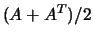 is SPD, and the a priori sparsity pattern to be used must be symmetric. The latter may be guaranteed by 1) constructing the sparsity pattern with a symmetric matrix, or 2) if the matrix is structurally symmetric (has symmetric pattern), then thresholding to construct the pattern is not used (i.e., zero value of the thresh parameter is used).
The Euclid library is a scalable implementation of the Parallel ILU algorithm that was presented at SC99 [7], and published in expanded form in the SIAM Journal on Scientific Computing [8]. By scalable we mean that the factorization (setup) and application (triangular solve) timings remain nearly constant when the global problem size is scaled in proportion to the number of processors. As with all ILU preconditioning methods, the number of iterations is expected to increase with global problem size.
Experimental results have shown that PILU preconditioning is in general more effective than Block Jacobi preconditioning for minimizing total solution time. For scaled problems, the relative advantage appears to increase as the number of processors is scaled upwards. Euclid may also be used to good advantage as a smoother within multigrid methods.
Euclid is best thought of as an ``extensible ILU preconditioning framework.'' Extensible means that Euclid can (and eventually will, time and contributing agencies permitting) support many variants of ILU(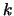) and ILUT preconditioning. (The current release includes Block Jacobi ILU() and Parallel ILU() methods.) Due to this extensibility, and also because Euclid was developed independently of the HYPRE project, the methods by which one passes runtime parameters to Euclid preconditioners differ in some respects from the HYPRE norm. While users can directly set options within their code, options can also be passed to Euclid preconditioners via command line switches and/or small text-based configuration files. The latter strategies have the advantage that users will not need to alter their codes as Euclid's capabilities are extended.
The following fragment illustrates the minimum coding required to invoke Euclid preconditioning within HYPRE application contexts. The next subsection provides examples of the various ways in which Euclid's options can be set. The final subsection lists the options, and provides guidance as to the settings that (in our experience) will likely prove effective for minimizing execution time.
#include "HYPRE_parcsr_ls.h"
HYPRE_Solver eu;
HYPRE_Solver pcg_solver;
HYPRE_ParVector b, x;
HYPRE_ParCSRMatrix A;
//Instantiate the preconditioner.
HYPRE_EuclidCreate(comm, &eu);
//Optionally use the following two calls to set runtime options.
// 1. pass options from command line or string array.
HYPRE_EuclidSetParams(eu, argc, argv);
// 2. pass options from a configuration file.
HYPRE_EuclidSetParamsFromFile(eu, "filename");
//Set Euclid as the preconditioning method for some
//other solver, using the function calls HYPRE_EuclidSetup
//and HYPRE_EuclidSolve. We assume that the pcg_solver
//has been properly initialized.
HYPRE_PCGSetPrecond(pcg_solver,
(HYPRE_PtrToSolverFcn) HYPRE_EuclidSolve,
(HYPRE_PtrToSolverFcn) HYPRE_EuclidSetup,
eu);
//Solve the system by calling the Setup and Solve methods for,
//in this case, the HYPRE_PCG solver. We assume that A, b, and x
//have been properly initialized.
HYPRE_PCGSetup(pcg_solver, (HYPRE_Matrix)A, (HYPRE_Vector)b, (HYPRE_Vector)x);
HYPRE_PCGSolve(pcg_solver, (HYPRE_Matrix)parcsr_A, (HYPRE_Vector)b, (HYPRE_Vector)x);
//Destroy the Euclid preconditioning object.
HYPRE_EuclidDestroy(eu);
For expositional purposes, assume you wish to set the ILU() factorization level to the value 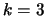. There are several methods of accomplishing this. Internal to Euclid, options are stored in a simple database that contains (name, value) pairs. Various of Euclid's internal (private) functions query this database to determine, at runtime, what action the user has requested. If you enter the option ``-eu_stats 1'', a report will be printed when Euclid's destructor is called; this report lists (among other statistics) the options that were in effect during the factorization phase.
Method 1. By default, Euclid always looks for a file titled ``database'' in the working directory. If it finds such a file, it opens it and attempts to parse it as a configuration file. Configuration files should be formatted as follows.
>cat database
#this is an optional comment
-level 3
Any line in a configuration file that contains a ``#'' character in the first column is ignored. All other lines should begin with an option name, followed by one or more blanks, followed by the option value. Note that option names always begin with a ``-'' character. If you include an option name that is not recognized by Euclid, no harm should ensue.
Method 2. To pass options on the command line, call
where argc and argv carry the usual connotation: main(int argc, char *argv[]). If your HYPRE application is called phoo, you can then pass options on the command line per the following example.HYPRE_EuclidSetParams(HYPRE_Solver solver, int argc, char *argv[]);
mpirun -np 2 phoo -level 3
Since Euclid looks for the ``database'' file when HYPRE_EuclidCreate is called, and parses the command line when HYPRE_EuclidSetParams is called, option values passed on the command line will override any similar settings that may be contained in the ``database'' file. Also, if same option name appears more than once on the command line, the final appearance determines the setting.
Some options, such as ``-bj'' (see next subsection) are boolean. Euclid always treats these options as the value ``1'' (true) or ``0'' (false). When passing boolean options from the command line the value may be committed, in which case it assumed to be ``1.'' Note, however, that when boolean options are contained in a configuration file, either the ``1'' or ``0'' must stated explicitly.
Method 3. There are two ways in which you can read in options from a file whose name is other than ``database.'' First, you can call HYPRE_EuclidSetParamsFromFile to specify a configuration filename. Second, if you have passed the command line arguments as described above in Method 2, you can then specify the configuration filename on the command line using the -db_filename filename option, e.g.,
mpirun -np 2 phoo -db_filename ../myConfigFile
The following options are partially implemented, but not yet fully functional (i.e, don't use them until further notice).
PILUT is a parallel preconditioner based on Saad's dual-threshold incomplete factorization algorithm. The original version of PILUT was done by Karypis and Kumar [9] in terms of the Cray SHMEM library. The code was subsequently modified by the HYPRE team: SHMEM was replaced by MPI; some algorithmic changes were made; and it was software engineered to be interoperable with several matrix implementations, including HYPRE's ParCSR format, PETSc's matrices, and ISIS++ RowMatrix. The algorithm produces an approximate factorization 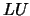, with the preconditioner defined by .
Note: PILUT produces a nonsymmetric preconditioner even when the original matrix is symmetric. Thus, it is generally inappropriate for preconditioning symmetric methods such as Conjugate Gradient.
SetMaxNonzerosPerRow( int LFIL ); (Default: 20)
Set the maximum number of nonzeros to be retained in each row of and .
This parameter can be used to control the amount of memory that and
occupy. Generally, the larger the value of LFIL, the longer it takes to
calculate the preconditioner and to apply the preconditioner and the larger
the storage requirements, but this trades
off versus a higher quality preconditioner that reduces the number of
iterations.
SetDropTolerance( double tol ); (Default: 0.0001)
Set the tolerance (relative to the 2-norm of the row) below which entries in L
and U are automatically dropped. PILUT first drops entries based on the drop
tolerance, and then retains the largest LFIL elements in each row that remain.
Smaller values of tol lead to more accurate preconditioners, but can
also lead to increases in the time to calculate the preconditioner.
Usually, HYPRE can be built by simply typing ./configure followed by make in the top-level source directory. HYPRE uses GNU Autoconf, Automake, and libtool so the building of the HYPRE library should be familiar to you if you've built GNU based packages before.
The HYPRE distribution available through the Lawrence Livermore National Laboratory HYPRE web page at http://www.llnl.gov/CASC/hypre/ from the Software distribution page. The HYPRE Software distribution page will contain the tarballs for the 2 latest general, beta distributions, as well as documentation of HYPRE. You may also subscribe to the HYPRE software release announcement mailing lists form the HYPRE web page.
After unpacking the HYPRE tarball, the distribution will be in a
subdirectory of the form, hypre-VERSION (e.g., hypre-1.8.4, with a
"b" appended if the release is a beta).
$ gzip -cd hypre-1.8.4b.tar.gz | tar -xf -
$ cd hypre-1.8.4b
$ ls
CHANGELOG INSTALL docs COPYRIGHT_and_DISCLAIMER README src$ cd src
FEI_mv blas matrix_matrix struct_ls HYPRE.h config nopoe struct_mv IJ_mv configure parcsr_es tarch Makefile.am distributed_ls parcsr_ls test Makefile.in distributed_matrix parcsr_mv utilities aclocal.m4 krylov seq_mv babel lapack sstruct_ls babel-runtime lib sstruct_mv
The HYPRE distribution subdirectory will contain files and directories similar to the above directory listing.
To automatically generate machine specific makefiles, type
./configure in the top level `src' directory. The configure
script is a portable script generated by GNU Autoconf. It runs a
series of tests to determine characteristics of the machine on which
it is running, and it uses the results of the these tests to produce
the machine specific makefiles, called `Makefile', from template files
called `Makefile.in' in each directory. Once the makefiles are
produced you can run make as you would with any other makefile.
The configure script primarily does the following things:
The configure script makes these decisions based on a hierarchical check. First, it attempts to identify the machine on which it is running as a specific supported machine. Next it will try to identify the architecture as a supported architecture. If both of these fail, generic default decisions are made by the script. However, the script does have some command-line options that can give you control over the choices it will make. You can type configure -help to see the list of all of the command-line options to configure. This is the best resource for information on configure options. The `INSTALL' file in the top-level directory contains a little more information on installing software using configure.
Configure automatically generates a file HYPRE_config.h that
includes all the header files found to be necessary by configure.
This file may be used to see how a compiled version of the library was
configured and may also be included by the user in his/her own code.
HYPRE libraries are built from the top-level source directory
by simply typing:
$ ./configure
$ make install
Note that by default HYPRE libraries will be
installed in a subdirectory hypre/lib, and the include files in
hypre/include (i.e., -prefix=`pwd`/hypre). This differs from the standard
GNU install which uses /usr/local/lib, and /usr/local/include. After
testing (below) configure can be rerun with the -prefix=/usr/local
option, followed by make install, to get the GNU behavior.
After the make install step above, a few sample
drivers can be used to test the build. cd test make The test drivers ij,
ij_es, ij_mv, new_ij, struct, and sstruct will be built, and should
be runable from the command line.
$ ./configure
$ make test
$ cd test
$ ./ij
$ ./ij_es
$ ./ij_mv
$ ./sstruct
$ ./struct
To build the (stand-alone) fei driver the following
steps are needed, starting from the top-level source directory:
$ make nofei
$ cd test
$ make fei++
$ ./fei
A program linking with HYPRE must be compiled with -I$PREFIX/include and linked with -L$PREFIX/lib -lhypre library name... -lhypre library name..., where $PREFIX is the directory where HYPRE is installed, specified by the configure option -prefix=PREFIX. Additionally, any other libraries to which HYPRE is linked must also be linked to by the users application. For example, the BLAS library or PETSc library are often (but not always) linked in by HYPRE and would also need to be linked in by the users application.
It may be useful to reference the Makefile in the test
subdirectory. This makefile is designed to build test applications
that link with and call HYPRE. All include and linking flags that
are used by HYPRE and needed by these test applications get
exported to this file by the configure script.
Configure does it best to try and determine the
compile options needed to build HYPRE. However the defaults that
configure chooses can not meet everyones needs. Configure will display
all of its available options by typing ./configure -help. A few of the
more useful options include:
$ ./configure -enable-shared=yes, will build both
shared and static libraries.
$ ./configure -enable-debug -without-MPI, will compile
a serial version and debugging.
$ ./configure -with-babel, will build the babel interface
libraries
$ ./configure -prefix=$HOME, will install HYPRE in
to $HOME
To build 64-bit static libraries on AIX (Note: configure will need to
execute compiled code for its test, so configure needs to be run so
that the default AIX poe scheduling is disabled), use the following:
$ ./nopoe ./configure CC=mpcc CXX=mpCC F77=mpxlf
CFLAGS="-q64 -qmaxmem=8192 -DHYPRE_COMM_SIMPLE -O3
-qstrict"
CXXFLAGS="-q64 -qmaxmem=8192 -DHYPRE_COMM_SIMPLE -O3
-qstrict"
F77FLAGS="-q64 -O3 -qstrict"
LDFLAGS="-q64" AR="ar -X64"
make -i install
To support a read-only source tree, and build everything in a
directory, build (VPATH):
$ mkdir build
$ cd build
$ ../configure
$ make test
all Make all the top-level targets, the default. clean Undo what ever make does. mostlyclean Like clean, but leaves libraries. Maintainer-clean Delete everything than can be rebuilt. distclean Undo what ever configure does. install Copy (install) executables/libraries. install-strip Strip the installed files. uninstall Undo what every make install does. TAGS Update the tags table. test Build, install libraries, then build test drivers. dist Create a distribution file of the sources files. check Perform self-test (if any). installcheck Build and test an install. distcheck Build and test a distribution.
Use MPI wrappers for the C, C++, and Fortran compilers (e.g., mpicc, mpicxx, mpif77). This will cause the least amount of confusion for configure and allow you to conveniently tune the compiler flags and libraries to your particular system. If MPI is enabled, mpicc will be the preferred compiler for C, while mpiCC or mpicxx will be used for C++, and mpif77 for Fortran.
If when running ./configure on AIX you get the error:
checking for C compiler default output file name... a.out checking whether the C compiler works... configure: error: cannot run C compiled programs. If you meant to cross compile, use `--host'. See `config.log' for more details.Rerun configure using ./nopoe ./configure.
Although HYPRE is written in C, a Fortran interface is provided. The Fortran interface is very similar to the C interface, and can be determined from the C interface by a few simple conversion rules. These conversion rules are described below.
Let us start out with a simple example. Consider the following HYPRE prototype:
int HYPRE_IJMatrixSetValues(HYPRE_IJMatrix matrix,
int nrows, int *ncols,
const int *rows, const int *cols,
const double *values);
The corresponding Fortran code for calling this routine is as follows:
integer*8 matrix,
integer nrows, ncols(MAX_NCOLS)
integer rows(MAX_ROWS), cols(MAX_COLS)
double precision values(MAX_COLS)
integer ierr
call HYPRE_IJMatrixSetValues(matrix, nrows, ncols, rows, cols,
& values, ierr)
The Fortran subroutine name is the same, unless the name is longer
than 31 characters. In these situations, the name is condensed to 31
characters, usually by simple truncation. For now, users should look
at the Fortran drivers in the test directory for the correct
condensed names. In the future, this aspect of the interface conversion
will be made consistent and straightforward.
The Fortran subroutine argument list is always the same as the
corresponding C routine, except that the error return code ierr
is always last. Conversion from C parameter types to Fortran argument
type is summarized in Table 8.1.
|
(int *) or
(double *), and the corresponding Fortran types are simply
integer or double precision arrays. Note that the
Fortran arrays may be indexed in any manner. For example, an integer
array of length N may be declared in fortran as either of the
following:
integer array(N)
integer array(0:N-1)
HYPRE objects can usually be declared as in the table because
integer*8 usually corresponds to the length of a pointer.
However, there may be some machines where this is not the case
(although we are not aware of any at this time). On such machines,
the Fortran type for a HYPRE object should be an integer of
the appropriate length.
HYPRE has an automated bug reporting mechanism in place that may be used as a resource for submitting bugs, desired features, and documentation problems, as well as querying the status of previous reports. Access http://www-casc.llnl.gov/bugs for full bug tracking details or to submit or query a bug report. When using the CASC bug reporting site for the first time, click on ``Open a new Bugzilla account'' under the ``User login account management'' heading.
This document was generated using the LaTeX2HTML translator Version 2002 (1.62)
Copyright © 1993, 1994, 1995, 1996,
Nikos Drakos,
Computer Based Learning Unit, University of Leeds.
Copyright © 1997, 1998, 1999,
Ross Moore,
Mathematics Department, Macquarie University, Sydney.
The command line arguments were:
latex2html -split 2 -show_section_numbers -bottom_navigation -dir HYPRE_usr_manual usr_manual.tex
The translation was initiated by Ellen M. Hill on 2005-02-25
![\begin{displaymath}
\left [
\begin{array}{ccc}
& -1 & \\
-1 & 4 & -1 \\
& -1 &
\end{array}\right ] .
\end{displaymath}](img9.png)
![\includegraphics[width=4in]{block_structured.eps}](img11.png)